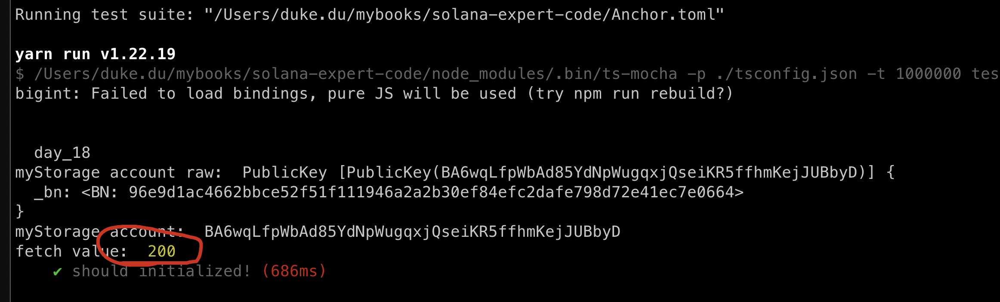

Read account data
In this tutorial, we will discuss how to read data from Solana storage account.
in general there are 4 ways we can leverage:
- Using command:
solana account <address>, we showed before. - Reading within the contract, recall what did before in:
lib.rs - Using anchor library: this is applicable for anchor programs, this is the commonly used one which we will focus on.
- Fetching from raw data with solana web3 js library.
Read In Anchor
we can create a new program with the same code as day_17(without the Get() function releated)
anchor new day_18
use anchor_lang::prelude::*;
use std::mem::size_of;
declare_id!("5cesgJ7ENbdnpqPQdnNci2dHAVYxKyP2rxSp37SxesWF");
#[program]
pub mod day_18 {
use super::*;
pub fn initialize(ctx: Context<Initialize>) -> Result<()> {
Ok(())
}
// new code
pub fn set(ctx: Context<Set>, x: u64) -> Result<()> {
ctx.accounts.my_storage_set.x = x;
Ok(())
}
}
// new code
#[derive(Accounts)]
pub struct Set<'info> {
#[account(mut, seeds=[], bump)]
pub my_storage_set: Account<'info, MyStorage>,
}
#[account]
pub struct MyStorage {
x: u64,
}
#[derive(Accounts)]
pub struct Initialize<'info> {
#[account(init, payer=signer, space=size_of::<MyStorage>()+8,seeds=[], bump)]
pub my_storage_account: Account<'info, MyStorage>,
#[account(mut)]
pub signer: Signer<'info>,
pub system_program: Program<'info, System>,
}
add test case and run it
import * as anchor from "@coral-xyz/anchor";
import { Program } from "@coral-xyz/anchor";
import { Day18 } from '../target/types/day_18';
describe("day_18", () => {
anchor.setProvider(anchor.AnchorProvider.env());
const program = anchor.workspace.Day18 as Program<Day18>;
it("should initialized!", async () => {
const seeds = []
const [myStorage, _bump] = anchor.web3.PublicKey.findProgramAddressSync(seeds, program.programId);
console.log('myStorage account raw: ', myStorage);
console.log('myStorage account: ', myStorage.toBase58());
await program.methods.initialize().accounts({
myStorageAccount: myStorage
}).rpc();
const value = new anchor.BN(200)
const tx = await program.methods.set(value).accounts({
myStorageSet: myStorage
}).rpc();
// ADD new code here!!!!
const v = await program.account.myStorage.fetch(myStorage);
console.log('fetch value: ', v.x.toNumber());
})
});
the only difference here is adding these new lines:
// ADD new code here!!!!
const v = await program.account.myStorage.fetch(myStorage);
console.log('fetch value: ', v.x.toNumber());
we will fetch data from the myStorage and disaply in decimalism

IDL vs ABI
The reason Anchor can help us parse the myStorage struct is due to its use of IDL (Interface Definition Language), which we discussed on day 03.
An IDL serves a similar purpose to an ABI (Application Binary Interface) in Ethereum: it acts as a guide to interpret the bytecode of a program (or smart contract).

Read Outside Anchor
Recall what we would do when we want to make a sc call in Ethereum, we will need to get two things ready: the address and the abi, and we need create a smarc-contract instance by using ethers.js or web3.js before we make the call.
Similarly here in Solana, we also need two things in place first:
- the program id
- the IDL
let's create a new .ts file: day_18_1.ts under /tests, assuming this is our Frontend, and we want to call x in myStorage.
import { PublicKey } from '@solana/web3.js';
import { Program, AnchorProvider, Idl, web3 } from '@coral-xyz/anchor';
import fs from 'fs';
const idlFile = fs.readFileSync('../target/idl/day_18.json', 'utf8');
const idl: Idl = JSON.parse(idlFile);
// Set environment variables
process.env.ANCHOR_PROVIDER_URL = 'http://127.0.0.1:8899';
process.env.ANCHOR_WALLET = '/Users/xxxx/.config/solana/id.json';
// Create a provider
const provider = AnchorProvider.env();
// Create the program interface
const program = new Program(idl, provider);
async function getXValueFromStorageAccount(storageAccountPublicKey: PublicKey) {
try {
const account = await program.account['myStorage'].fetch(storageAccountPublicKey);
const xValue = account.x;
console.log('X value:', xValue.toNumber());
return xValue;
} catch (error) {
console.error('Error fetching storage account data:', error);
throw error;
}
}
// Derive the PDA for myStorage
const seeds = [];
const [myStorage, bump] = web3.PublicKey.findProgramAddressSync(seeds, program.programId);
console.log('myStorage account raw:', myStorage);
console.log('myStorage account:', myStorage.toBase58());
async function main() {
await getXValueFromStorageAccount(myStorage);
}
main().catch(console.error);
here, we create a separate test file to simulate the Frontend, initializing a program and fetch data from storage account directly.
- get myStorage address by using web3.js library.
- initializing program with idl and provider
let's run the script by the following cmd, NOTE: be sure to run the code under /tests/ folder
ts-node day_18_1.ts

fantastic!
getAccountInfo
the last method to fetch data of an account it to call: getAccountInfo, it will return the full information of that account, including the data field.
let's add a new function to day_18_1.ts:
async function getXValueFromAccount(storageAccountPublicKey: PublicKey) {
try {
const info = await provider.connection.getAccountInfo(storageAccountPublicKey);
console.log('Account info:', info);
} catch (error) {
console.error('Error fetching storage account data:', error);
throw error;
}
}
call in main()
async function main() {
await getXValueFromStorageAccount(myStorage);
await getXValueFromAccount(myStorage);
}
run above cmd again and you will get the info of this account:

this is the end, four methods to fetch data has fully covered!
Key takeaways
- How to initialize a solana program? idl and program id, we didn't set the programId cos it's already provided by the idl json file.
Links
- original article: https://www.rareskills.io/post/solana-read-account-data
- source code: https://github.com/dukedaily/solana-expert-code/tree/day_18